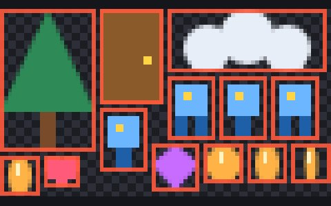

Make tools
Tools that run in your browser, with nothing to install. Your files never leave the tab.
-
 Level editor
Level editorPaint tile levels, play-test them instantly, and copy them out as text for
createTilemap(). -

Sprite packerPack PNGs of any size into one atlas image and a JSON frame list for
createAtlas(). -
 Spark Hop: the 13k path
Spark Hop: the 13k pathA whole game in about 3.4 KB zipped, for js13kGames and other size-limited jams. How to pack yours.
More
- Tool guideWhat each tool makes and how to load it in a game
- Platformer sampleThe game the level editor's tiles come from
- Jam starterThe full-engine starting point for normal jams